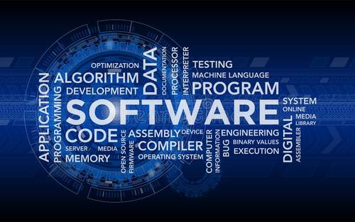

研究課題または興味ある科目
私は阿辻ゼミで、日本のキャッシュレス化について研究しました。
研究中心
１、なぜ日本のキャッシュレスが遅れっているのか。
２、アジアで最もキャッシュレス化社会に進んでいる中国の情報を収集して、研究して、キャッシュ レス化のメリットとデメリットを分析しました。
３、日本の状況と似ているスウェーデンのキャッシュレス化を分析して、日本にふさわしいキャッシ ュレス仕組みを想定しました。 この研究から、課題解決のプロセスやメソッドを習得でき、チームワークの強さを感じました。大学生活において特に力を注いだこと
